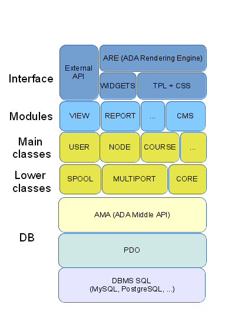

Struttura dell'ADA FrameworK
-
Quanto segue è applicabile a tutte le versioni di ADA (Abiente Digitale per l'Apprendimento) e a WISP (Web Integrated Services Provider).
AMA (Ada mid Api) è la parte di codice che si occupa di tutti gli accessi al database. Per una sua descrizione più dettagliata rimandiamo alla sezione Coding.
AFK è scritta in stile object oriented utilizzando le caratteristiche di PHP 5.*. Sono presenti alcune classi di basso livello, che sono utilizzate da tutti i moduli, e forniscono le funzionalità trasversali, come l'accesso a differenti provider separati o ai canali di comunicazioni, alla gestione degli errori, al log, etc.
Ogni installazione di AFK prevede l'esistenza di differenti "provider", ognuno dei quali ha un proprio database indipendente. Questa struttura, insieme ad un meccanismo di indirizzamento tramite l'analisi della URL e all'indipendenza dell'interfaccia, permette di gestire all'interno di una singola installazione degli spazi autonomi di utenti, servizi e interfacce, ognuno accessibile da un dominio di terzo livello separato.
La comunicazione tra utenti e tra sistema e utenti è gestita da uno spooler unico. Sono disponibili diversi canali: messaggeria interna, email, chat e videoconferenza. La videoconferenza è gestita con l'integrazione di OpenMeetings. http://openmeetings.apache.org/
Le classi principali corrispondono agli oggetti dell'applicazione e sono le seguenti:- * User: gestisce tutti i tipi di utente (guest, student, tutor, author, switcher, admin).
- * Node: in AFK ogni oggetto è un nodo oppure un gruppo di nodi.
- * Course: il modello di un corso, cui puntano i nodi.
- * Course instance: l'edizione del corso, cui puntano gli iscritti.
- * Service: è la tipologia generale di corsi.
- * Layout: è la classe che gestisce le interfacce utente.
Ogni corso astratto viene istanziato in edizioni, che hanno una durata temporale, cui sono iscritti uno o più utenti, eventualmente seguiti da un tutor.
Nota: per "corso" va inteso qualsiasi insieme coerente di contenuti, dotato di un titolo e di una descrizione, composto da nodi linkati fra di loro, accessibile tramite un indice, una mappa grafica o un motore di ricerca. Alcuni corsi possono essere pubblici, cioè accessibili all'utente guest, altri riservati agli utenti registrati che hanno chiesto l'iscrizione a quel corso.
CORE (Common Output Rendering Engine) è la parte di codice che si occupa della generazione dinamica del codice HTML. Per ogni elemento del DOM che deve essere creato, è presente una classe che si occupa della sua renderizzazione.
CORE è disponibile al seguente indirizzo: https://github.com/lynxlab/ada/tree/master/include/CORE
Attualmente è implementata la versione HTML 4.
ARE (ADA Rendering Engine) è il motore che gestisce l'interfaccia di ogni modulo.Per una sua descrizione più dettagliata rimandiamo alla sezione Coding.
Sono state sviluppate delle API che, tramite un meccanismo di autenticazione (via Oauth2, http://oauth.net/2/), permettono di inviare e richiedere dati da applicazioni esterne; ad esempio, per l'iscrizione di utenti da remoto, la verifica dello stato di un utente, dei corsi disponibili, e in generale il recuprto di ogni informazione presente nella piattaforma. Il codice per le chiamate alle API è disponibile in forma di SDK integrabile in altre applicazioni PHP. https://github.com/lynxlab/ada-php-sdk
AFK prevede due meccanismi semplici per l'estensione :- * moduli
- * widgets
I moduli sono parti di codice complesso, che necessitano di codice, di tabelle aggiuntive e di template specifici. Esiste uno standard per la scrittura dei moduli, per l'estensione delle classi e per l'aggiunta delle tabelle nel DB.
Ad esempio, qui c'è il codice del modulo per l'invio delle newsletter:
https://github.com/lynxlab/ada/tree/master/modules/newsletter
I widgets sono invece piccoli frammenti di codice che possono essere inseriti ovunque nella pagina e generalmente utilizzano AJAX per recuperare dati (interni o esterni) e visualizzarli. I widgets sono configurabili tramite un file XML che contiene il riferimento al codice, lo stato, la posizione nel template.
https://github.com/lynxlab/ada/blob/master/widgets/main/index.xml

AMA
CLASSI DI SERVIZIO
MULTIPORT
COMUNICAZIONE
OGGETTI PRINCIPALI
CORE
ARE
API
ESTENSIONI